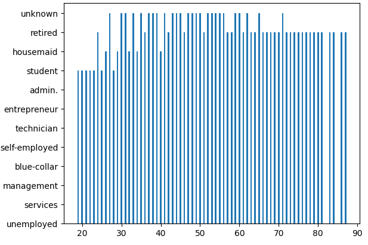
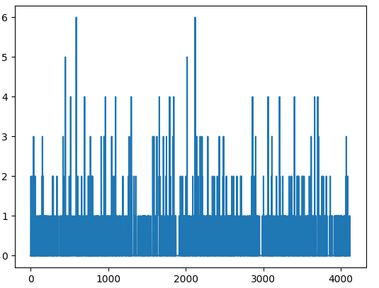
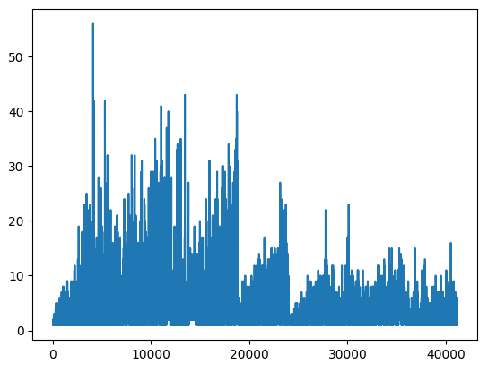
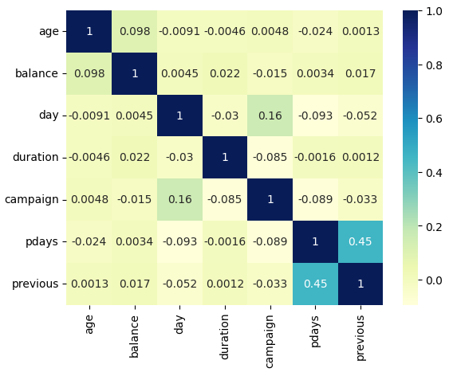

About the Data
The data pertains to direct marketing campaigns conducted by a Portuguese bank, which relied on phone calls to reach clients. In many cases, multiple calls were necessary to determine if a client would subscribe ('yes') or not ('no') to a term deposit.
The dataset includes four files:
bank-additional-full.csv: Contains all 41,188 examples with 20 input features, sorted by date (from May 2008 to November 2010), similar to the data used in [Moro et al., 2014].
bank-additional.csv: A 10% sample (4,119 examples) randomly selected from the first dataset, with the same 20 inputs.
bank-full.csv: Includes all examples with 17 inputs, also sorted by date (an older version of the dataset with fewer inputs).
bank.csv: A 10% sample from the previous file, containing 17 inputs (an older version with fewer inputs).
Smaller datasets are available to facilitate testing with computationally intensive machine learning algorithms, such as SVM.
The objective is to predict whether a client will subscribe (yes/no) to a term deposit (variable y).
Input Variables:
1. job - Type of job (categorical: 'admin.', 'blue-collar', 'entrepreneur', 'housemaid', 'management', 'retired', 'self-employed', 'services', 'student', 'technician', 'unemployed', 'unknown')
2. marital - Marital status (categorical: 'divorced', 'married', 'single', 'unknown'; note: 'divorced' includes divorced and widowed)
3. education - Education level (categorical: 'basic.4y', 'basic.6y', 'basic.9y', 'high.school', 'illiterate', 'professional.course', 'university.degree', 'unknown')
4. default - Has credit in default? (categorical: 'no', 'yes', 'unknown')
5. housing - Has a housing loan? (categorical: 'no', 'yes', 'unknown')
6. loan - Has a personal loan? (categorical: 'no', 'yes', 'unknown')
7. contact - Contact communication type (categorical: 'cellular', 'telephone')
8. month - Last contact month of the year (categorical: 'jan', 'feb', 'mar', 'apr', 'may', 'jun', 'jul', 'aug', 'sep', 'oct', 'nov', 'dec')
9. day_of_week - Last contact day of the week (categorical: 'mon', 'tue', 'wed', 'thu', 'fri')
10. duration - Last contact duration in seconds (numeric; significant impact on target output, should be excluded for realistic predictive modeling)
11. campaign - Number of contacts performed during this campaign for this client (numeric, includes last contact)
12. pdays - Days since last contact with the client from a previous campaign (numeric; 999 indicates no prior contact)
13. previous - Number of contacts performed before this campaign for this client (numeric)
14. poutcome - Outcome of the previous marketing campaign (categorical: 'failure', 'nonexistent', 'success')
15. emp.var.rate - Employment variation rate - quarterly indicator (numeric)
16. cons.price.idx - Consumer price index - monthly indicator (numeric)
17. cons.conf.idx - Consumer confidence index - monthly indicator (numeric)
18. euribor3m - Euribor 3-month rate - daily indicator (numeric)
19. nr.employed - Number of employees - quarterly indicator (numeric)
20. y - Target variable: has the client subscribed to a term deposit? (binary: 'yes', 'no')
21. age - Age of the client (numeric)
Python Visualizations
Client Job Distribution by Age
The bar chart illustrates the distribution of clients across different age groups and job types within the dataset. The x-axis represents the ages of clients, while the y-axis denotes the number of clients in each job category. Each bar's height shows the frequency of clients of a specific age working in a given job role. This visualization helps identify trends in job distribution across various age groups, which could be useful for understanding target demographics for marketing campaigns. For instance, certain jobs might have higher frequencies within specific age brackets, indicating potential target groups for the bank's term deposit offers.
Trend of Previous Client Contacts
The line chart displays the trend of the previous variable, which represents the number of contacts made with each client prior to the current campaign. The x-axis shows the index or order of data entries, while the y-axis indicates the number of previous contacts for each client. This visualization allows us to observe patterns over the dataset, such as any peaks or drops in the frequency of previous contacts. Such trends may reveal insights into client engagement history and could inform strategies to enhance campaign effectiveness based on prior interactions.
Campaign Contact Frequency per Client

The line chart shows the trend for the campaign variable, representing the number of contacts made during the current campaign for each client. The x-axis corresponds to the data entry index or order, and the y-axis shows the number of contacts per client. This visualization provides insights into the frequency of campaign contacts across clients, highlighting any potential spikes or patterns in the campaign's outreach efforts. By analyzing these trends, we can gauge the intensity of contact attempts and assess the effectiveness or saturation of the campaign, which could help optimize future marketing strategies.
Correlation Matrix of Client Attributes
The heatmap provides a visual overview of the correlation matrix, showing the strength and direction of relationships between variables in the dataset. Using a "YlGnBu" color scheme, lighter colors indicate weaker or negative correlations, while darker shades signify stronger positive correlations. Each cell includes an annotation with the exact correlation value, making it easy to identify significant associations between variables. This visualization is useful for quickly spotting patterns, aiding in feature selection, and gaining insights into how different variables might interact within the dataset.
Tableau Visualizations
Revenue Breakdown
This Tableau visualization shows the revenue contribution by different products. Products A and C dominate the revenue streams, making up a combined 55% of total revenue. This insight helps identify the best-performing products and areas where resources could be concentrated for maximum impact.
Product Popularity
This Tableau visualization reflects popularity levels of various products based on user engagement. Product C stands out as the most popular, while Product E has the least engagement. This could inform future development focus or promotional activities to boost underperforming products.
Project Analysis
This dashboard provides a comprehensive overview of key business metrics and performance indicators, offering valuable insights into various aspects of the business. The sales data visualization allows us to understand monthly trends and seasonal spikes, suggesting timing strategies for marketing campaigns. Additionally, user growth over the years reflects the company's successful user acquisition efforts, highlighting areas for continued growth.
The revenue breakdown chart helps identify top-performing products, allowing for targeted resource allocation to maximize revenue impact. Furthermore, product popularity insights inform decisions on which products might benefit from increased promotion or development focus.
Overall, this analysis underscores the importance of data-driven decision-making in optimizing business strategies, resource allocation, and marketing efforts. By leveraging these insights, the company can strengthen its position in the market and continue to grow its user base while enhancing product offerings.